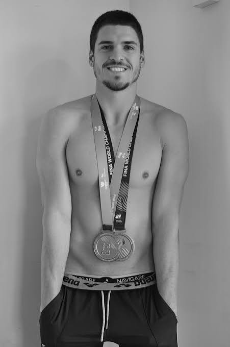

mynd
In un'altra vita sono stato il primo nuotatore artistico italiano, vincendo in 22 anni 4 ori Mondiali e 5 Europei. In questo percorso ho vissuto di tutto: dalle celebrazioni mediatiche agli insulti; dalla minaccia dello stereotipo alla rivincita personale.
Dottore in Scienze e Tecniche Psicologiche alla Sapienza di Roma, cerco più che altro di tenermi impegnato. Faccio parte del Gruppo Sportivo delle Fiamme Oro; lavoro col Progetto Filippide; collaboro con World Aquatics. In ogni ambito, il mio obiettivo è creare, per chi c'è adesso, un'esperienza sportiva migliore di quella che ho avuto io.
mynd è un pezzetto di questo progetto. Raccontando lo sport, cerco di proporne un'idea diversa: uno sport che sia più equilibrato; più sano; e, proprio per questo, più competivito. In poche parole: uno sport al servizio della persona.